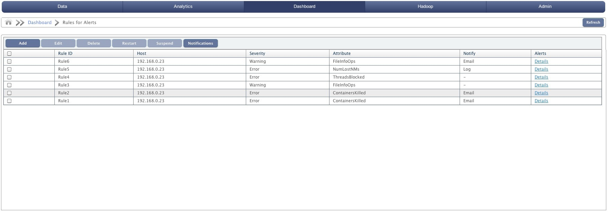
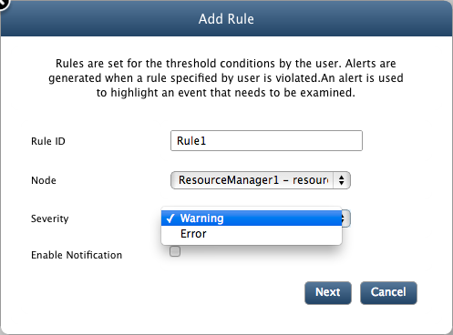
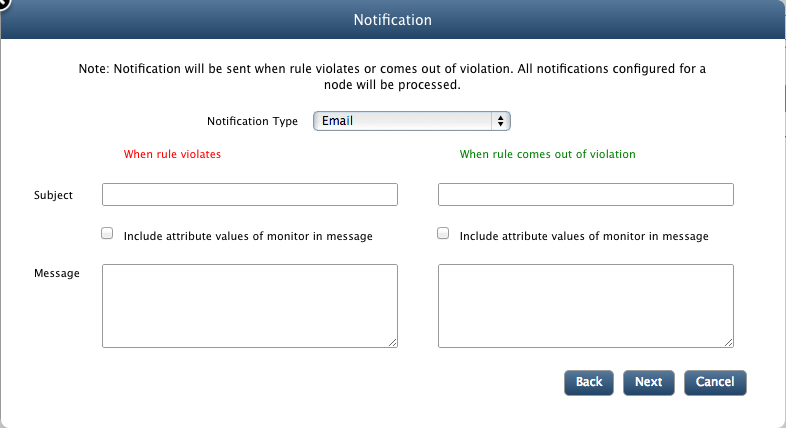
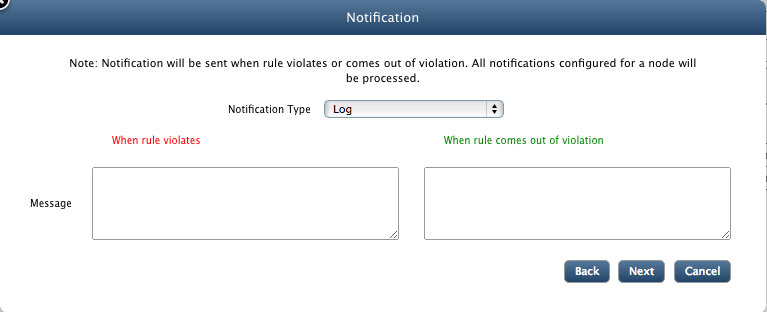
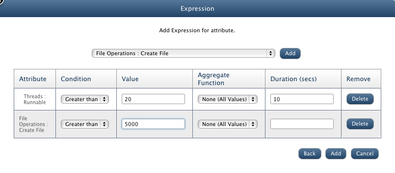
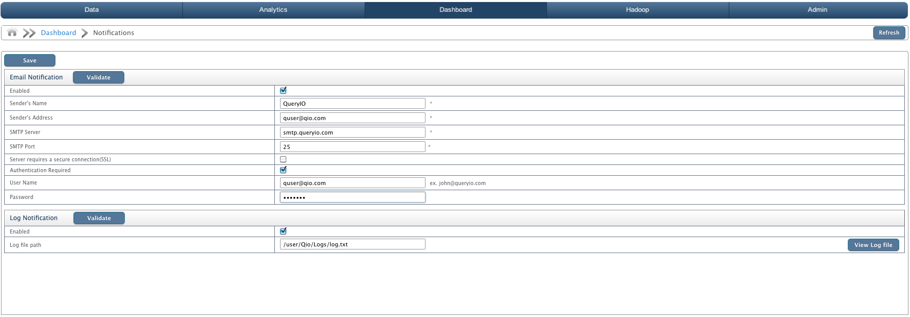

Rules for Alerts
In this chapter
This chapter shows how to define rules for alerts.
Rules
Select Rules for Alerts in Monitoring menu tab to perform more operations on alerts. You can view already created alert rules, create new alerts by defining new rules, suspend or start an alert or delete a rule.

Alerts are displayed in a tabular form with attributes as:
- Check box to select alert.
- RuleID: ID of the alert specified at time of creating alert.
- Host: IP address of the node for which alert is created.
- Severity: Warning or Error.
- Attribute: Attribute on which rule is defined. Examples: Heap memory used, CPU usage, Threads runnable etc.
- Notify: Notification will be sent when rule violates or comes out of violation. Notification type can be Email or Log.
- Alerts: Click on details to view about alert.
Add Rule
Steps to create a new Rule are specified here:
- Click on Add button to create a new Rule under Monitoring > Rules for Alerts.
- Rule ID: Enter RuleID for the rule.
- Node: Select the node from the drop down list on which the rule will work.
- Severity: Select the severity of alert as Warning or Error.
- And click on Next button.

- Next screen will configure the notification options. Notification will be sent when rule violates or comes out of violation. All notifications configured for a node will be processed.
- Notification Type: Select the notification type as Email or Log You need to configure Notifications setting first to get mail notifications.

- Subject: Enter subject and message for both cases i.e when a rule violates or come out of the violation (optional).
- Select Include attribute values of monitor in message check box to add details about alert in message.
- Message: Message that will be sent along with notification.
- Click on Next button to continue.

- Message: Message that will be sent along with notification.
- Add expression for Attribute: Select the expression for attribute from the drop down list and click on Add to create a expression.
- Enter details about the expression in a tabular form:
- Attribute: Expression attribute just selected.
- Condition: Condition to be checked on attribute. Select from greater than, less than, equal to and not equal to.
- Value: Value for the condition to fulfill.
- Aggregate Function: Use any aggregate function like average, minimum, maximum on expression attribute if required.
- Duration(sec): Time duration after which rules are violated and alert will be generated.
- Remove: Click Delete if you don't want to add it as a expression.
- Click on Add to create new alert.

Suspend Alert
To stop an alert manually, select the check box against the alert and click on Suspend button.
Restart Alert
To restart a alert, select the check box against the alert and click on Restart button.
Delete Alert
Select the check box against the alert and click on Delete button to delete an alert.
Edit Alert
Select the check box against the alert and click on Edit button to edit alert settings. You can update all the settings that were stored during creation of alert except rule id and node for which it was created.
Notifications
When an alert is raised a notice is sent out to all the concerned users that a particular event has occurred and needs to be dealt with. This process is called notification.
QueryIO provides two modes of notification. They are:
- Email notification
- Log notification
The preferred notification mode can be selected by enabling it and specifying the appropriate sender details.
Email notification
Configure email settings for the account from which mails will be sent.
- Enabled: Select check box to enable email notification..
- Sender's Name: User friendly name that will be seen when you receive a mail from QueryIO as Sender.
- Sender's Address: The address that will be used to send out the email that is your email address For example, xyz@queryio.com
- SMTP Server: The SMTP address of the mail server is to be entered here. For example, smtp.queryio.com
- SMTP Port: The outgoing SMTP port of the mail server is to be entered here. Default is 25.
- Server requires a secure connection(SSL): Check it if secure connection is required.
- Authentication: If the mail server requires authentication, authentication details are also required.
- User Name: User name of the sender's Email.
- Password: Password of the above username.
Log notification
In case the notification is to be logged to a log file then the following information is required.
- Enabled: Select check box to enable log notification..
- Log file path: Path of the log file to which QueryIO should log the notification message.

Copyright © 2015 QueryIO Corporation. All Rights Reserved.
QueryIO, "Big Data Intelligence" and the QueryIO Logo are trademarks
of QueryIO Corporation. Apache, Hadoop and HDFS are trademarks of The Apache Software Foundation.